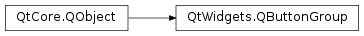

QButtonGroup¶
Synopsis¶
Functions¶
- def
addButton(arg__1[, id=-1]) - def
button(id) - def
buttons() - def
checkedButton() - def
checkedId() - def
exclusive() - def
id(button) - def
removeButton(arg__1) - def
setExclusive(arg__1) - def
setId(button, id)
Signals¶
- def
buttonClicked(arg__1) - def
buttonClicked(arg__1) - def
buttonPressed(arg__1) - def
buttonPressed(arg__1) - def
buttonReleased(arg__1) - def
buttonReleased(arg__1) - def
buttonToggled(arg__1, arg__2) - def
buttonToggled(arg__1, arg__2)
Detailed Description¶
The
PySide2.QtWidgets.QButtonGroupclass provides a container to organize groups of button widgets.
PySide2.QtWidgets.QButtonGroupprovides an abstract container into which button widgets can be placed. It does not provide a visual representation of this container (seePySide2.QtWidgets.QGroupBoxfor a container widget), but instead manages the states of each of the buttons in the group.An
PySide2.QtWidgets.QButtonGroup.exclusive()button group switches off all checkable (toggle) buttons except the one that has been clicked. By default, a button group is exclusive. The buttons in a button group are usually checkablePySide2.QtWidgets.QPushButtons,PySide2.QtWidgets.QCheckBoxes (normally for non-exclusive button groups), orPySide2.QtWidgets.QRadioButtons. If you create an exclusive button group, you should ensure that one of the buttons in the group is initially checked; otherwise, the group will initially be in a state where no buttons are checked.A button can be added to the group with
PySide2.QtWidgets.QButtonGroup.addButton()and removed withPySide2.QtWidgets.QButtonGroup.removeButton(). If the group is exclusive, the currently checked button is available withPySide2.QtWidgets.QButtonGroup.checkedButton(). If a button is clicked, thePySide2.QtWidgets.QButtonGroup.buttonClicked()signal is emitted; for a checkable button in an exclusive group this means that the button has been checked. The list of buttons in the group is returned byPySide2.QtWidgets.QButtonGroup.buttons().In addition,
PySide2.QtWidgets.QButtonGroupcan map between integers and buttons. You can assign an integer id to a button withPySide2.QtWidgets.QButtonGroup.setId(), and retrieve it withPySide2.QtWidgets.QButtonGroup.id(). The id of the currently checked button is available withPySide2.QtWidgets.QButtonGroup.checkedId(), and there is an overloaded signalPySide2.QtWidgets.QButtonGroup.buttonClicked()which emits the id of the button. The id-1is reserved byPySide2.QtWidgets.QButtonGroupto mean “no such button”. The purpose of the mapping mechanism is to simplify the representation of enum values in a user interface.
-
class
PySide2.QtWidgets.QButtonGroup([parent=nullptr])¶ Parameters: parent – PySide2.QtCore.QObjectConstructs a new, empty button group with the given
parent.
-
PySide2.QtWidgets.QButtonGroup.addButton(arg__1[, id=-1])¶ Parameters: - arg__1 –
PySide2.QtWidgets.QAbstractButton - id –
PySide2.QtCore.int
Adds the given
buttonto the button group. Ifidis -1, an id will be assigned to the button. Automatically assigned ids are guaranteed to be negative, starting with -2. If you are assigning your own ids, use positive values to avoid conflicts.- arg__1 –
Parameters: id – PySide2.QtCore.intReturn type: PySide2.QtWidgets.QAbstractButtonReturns the button with the specified
id, or 0 if no such button exists.
Parameters: arg__1 – PySide2.QtWidgets.QAbstractButton
-
PySide2.QtWidgets.QButtonGroup.buttonClicked(arg__1) Parameters: arg__1 – PySide2.QtCore.int
Parameters: arg__1 – PySide2.QtCore.int
-
PySide2.QtWidgets.QButtonGroup.buttonPressed(arg__1) Parameters: arg__1 – PySide2.QtWidgets.QAbstractButton
Parameters: arg__1 – PySide2.QtWidgets.QAbstractButton
-
PySide2.QtWidgets.QButtonGroup.buttonReleased(arg__1) Parameters: arg__1 – PySide2.QtCore.int
Parameters: - arg__1 –
PySide2.QtCore.int - arg__2 –
PySide2.QtCore.bool
- arg__1 –
-
PySide2.QtWidgets.QButtonGroup.buttonToggled(arg__1, arg__2) Parameters: - arg__1 –
PySide2.QtWidgets.QAbstractButton - arg__2 –
PySide2.QtCore.bool
- arg__1 –
Return type: Returns the button group’s list of buttons. This may be empty.
-
PySide2.QtWidgets.QButtonGroup.checkedButton()¶ Return type: PySide2.QtWidgets.QAbstractButtonReturns the button group’s checked button, or 0 if no buttons are checked.
-
PySide2.QtWidgets.QButtonGroup.checkedId()¶ Return type: PySide2.QtCore.intReturns the id of the
PySide2.QtWidgets.QButtonGroup.checkedButton(), or -1 if no button is checked.
-
PySide2.QtWidgets.QButtonGroup.exclusive()¶ Return type: PySide2.QtCore.bool
-
PySide2.QtWidgets.QButtonGroup.id(button)¶ Parameters: button – PySide2.QtWidgets.QAbstractButtonReturn type: PySide2.QtCore.intReturns the id for the specified
button, or -1 if no such button exists.
-
PySide2.QtWidgets.QButtonGroup.removeButton(arg__1)¶ Parameters: arg__1 – PySide2.QtWidgets.QAbstractButtonRemoves the given
buttonfrom the button group.
-
PySide2.QtWidgets.QButtonGroup.setExclusive(arg__1)¶ Parameters: arg__1 – PySide2.QtCore.bool
-
PySide2.QtWidgets.QButtonGroup.setId(button, id)¶ Parameters: - button –
PySide2.QtWidgets.QAbstractButton - id –
PySide2.QtCore.int
Sets the
idfor the specifiedbutton. Note thatidcannot be -1.See also
- button –
© 2018 The Qt Company Ltd. Documentation contributions included herein are the copyrights of their respective owners. The documentation provided herein is licensed under the terms of the GNU Free Documentation License version 1.3 as published by the Free Software Foundation. Qt and respective logos are trademarks of The Qt Company Ltd. in Finland and/or other countries worldwide. All other trademarks are property of their respective owners.